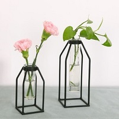

每周特价

插花工艺
插花视频样例示范
（1）相关介绍
插花艺术（ikebana），常简称为插花，即指将剪切下来的植物的枝、叶、花、果作为素材，经过一定的技术（修剪、整、弯曲等）和艺术（构思、造型、设色等）加工，重新配置成一件精制完美、富有诗情画意，能再现大自然美和生活美 的花卉作品的艺术形式。插花艺术的起源应归于人们对花卉的热爱，通过对花卉的定格，表达一种意境来体验生命的真实与灿烂。插花艺术对中国人而言，插花作品被视为一个天人合一的宇宙生命之融合。以“花”作为主要素材，在瓶、盘、碗、缸、筒、篮、盆等七大花器内造化天地无穷奥妙的一种盆景类的花卉艺术。
线上平台主要展示插花工艺的魅力进行宣传，可发布优质的插花视频资源，同时普及一些插花工艺的相关知识。
（2）基本步骤
1、一个干净的容器包含鲜花 - 这可能是一个花瓶，一个碗或一个篮子（等等），取决于鲜花的数量和大小。
2、一些花卉泡沫或花泥，用于在宽口容器中固定花朵。
3、一些花带或松紧带将花朵放在一起，特别是在高大狭窄的花瓶中。
4、用于切割花茎的锋利刀具或园艺剪刀。
5、一些防腐剂溶液（通常与鲜花一起提供）。
6、干净宽敞的工作台，内衬报纸。
7、选择新的鲜花和绿叶等花材。
（3）插花花材的处理
学习花艺制作插花前先处理好花材切断茎并剥离叶子。在将处理好的花材放置在工作台上整理好。在制作插花作品排列之前，有必要切割花茎。这使花朵更容易吸收水分，保持鲜花盛开寿命。
1、使用锋利的刀或园艺剪刀沿对角线切割花茎，距离末端约一英寸。
2、不建议使用厨房剪刀，因为它们会破坏茎干，并防止花朵获得不足够的水分。
3、如果您计划在将花朵放置在花瓶中，就要知道处理花茎长度，之前将它们放置在花瓶中，请记住在将制作好的插花和处理好的花材放入花瓶之前要进行第二次处理。
4、在将花朵制作布置之前，我们还需要移除养护花材水位以下的任何叶子。这个很重要，否则我们制作好的插花花艺作品的叶子会很快腐烂，污染花瓶中的水。
5、要保持玫瑰特别新鲜的一个技巧，就是在切割它们后立即将花茎浸泡在一英寸沸水中。将它们留在那里直到水变得温热，然后在将它们放入冷水中之前给茎干第二次剪断。
（4）花瓶的准备和处理
我们在处理制作好插花作品的下一步就是准备花瓶。碗，盒子或您计划用于插花的任何容器。确保容器干净整洁（清洁），没有任何的残留物或污垢。
1、如果我们要使用花卉泡沫来装插花（这是很好的，因为它保持在适当的位置，并为茎提供水），在放入容器中就要先让插花浸泡在防腐剂溶液中15分钟，然后在用锋利的剪切刀将其切成适当的形状容器。要将花茎切割后放入容器中茎要湿在泡沫容器的位置，并要用少许花带固定好。
2、如果我们使用的是花泥或玻璃纸网格（适合放置在花底部固定或带有木质茎的花），请将其放入容器中并用胶带或少许花卉粘合剂固定。或者，我们可以将所选的绿叶的木质茎横穿底座。这创造了这一种有机网格制作插花作品的风格。
（5）插花花艺不同容器的使用方法
